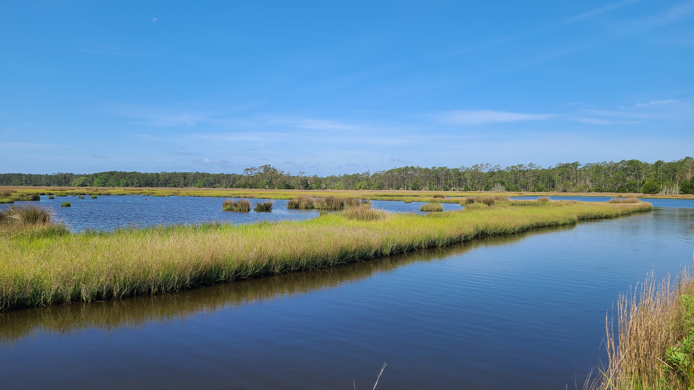
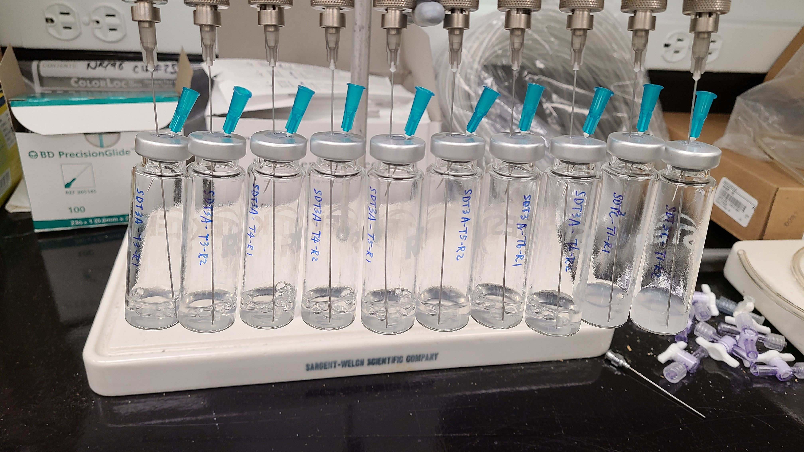
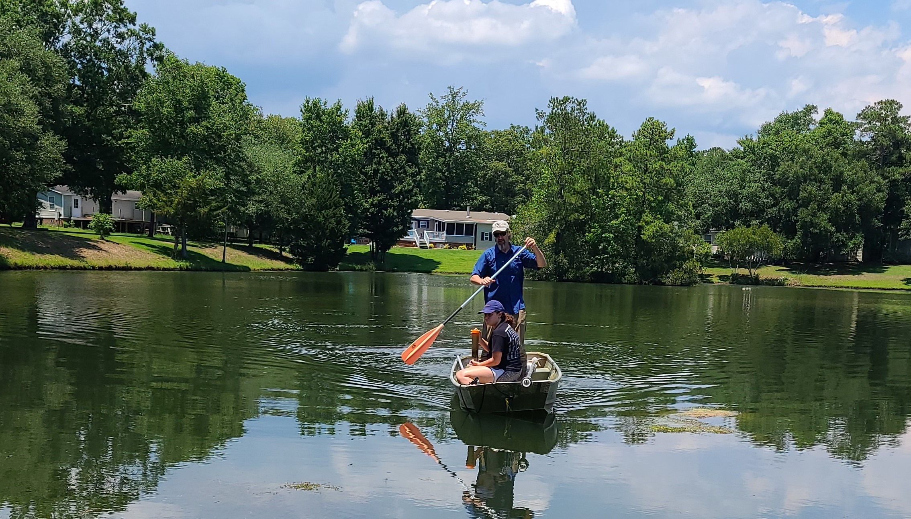
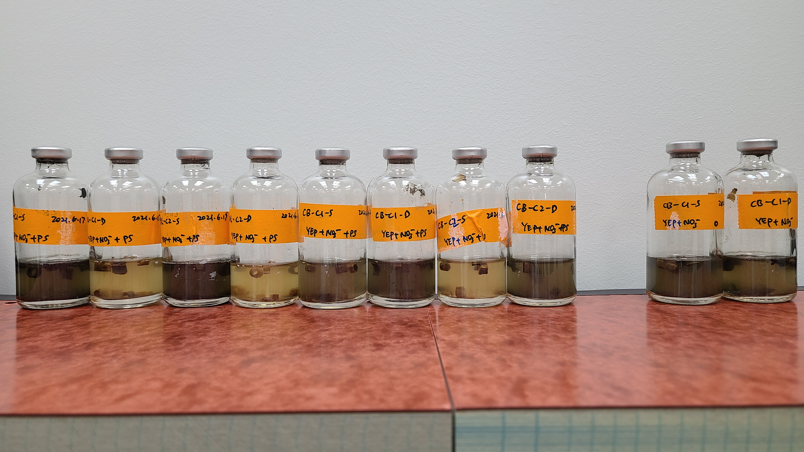
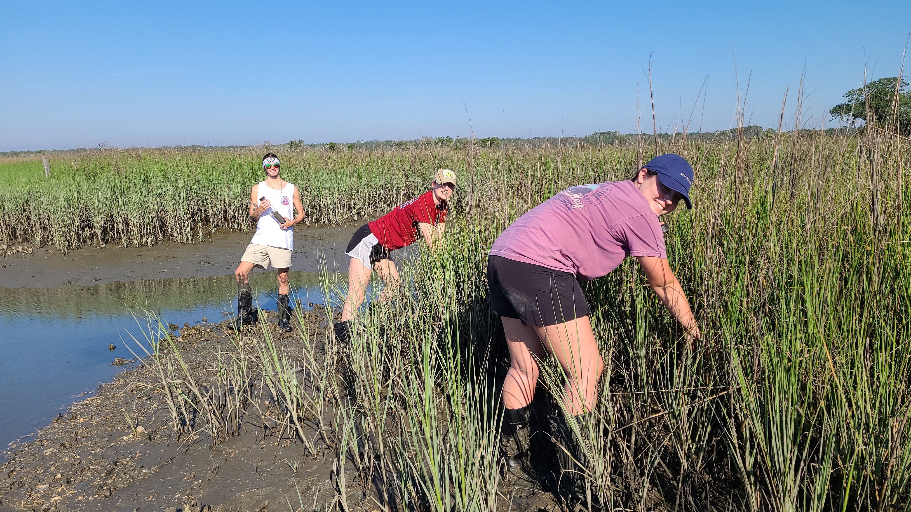
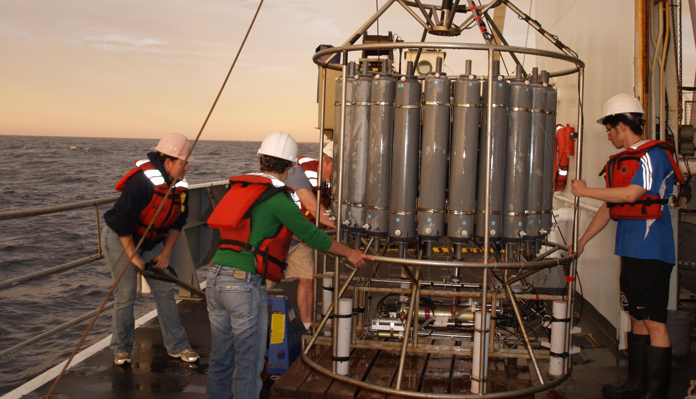
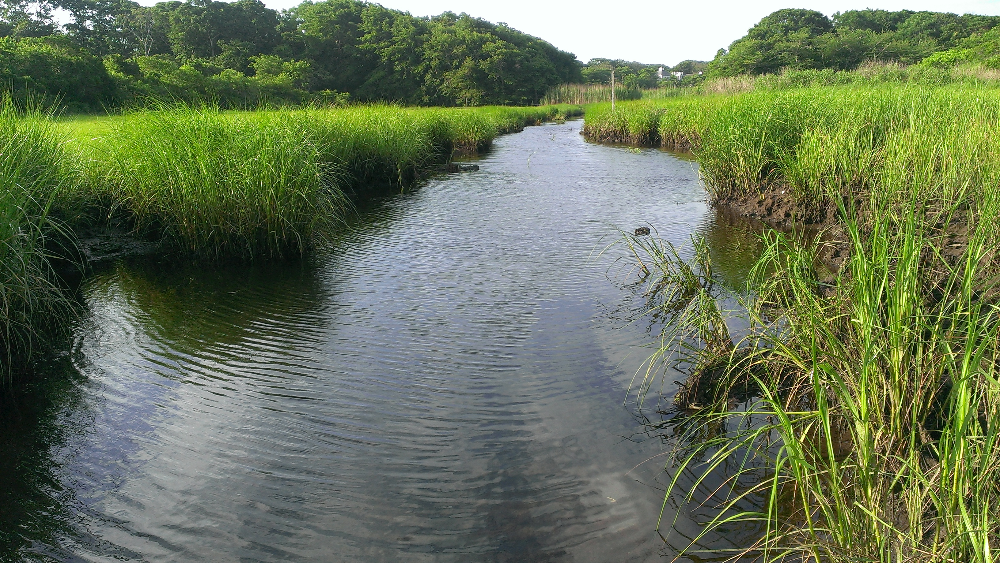

Salt Marshes at the Baruch Marine Field Lab, Georgetown, SC

Lab Photos

Field Work at Murrells Inlet

Anaerobic Cultivation

Sampling salt marsh sediments

Eastern Tropical North Pacific (2012)

Great Sippewissett Marsh in Falmouth, MA (July 2014)